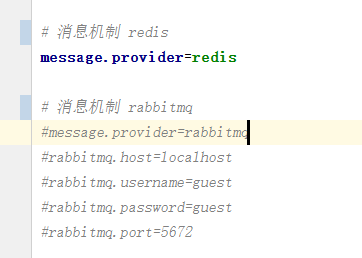

消息系统
1.简介
HAP 的消息系统提供队列和广播两种方式，实现方式为 Redis 和 RabbitMQ。 用户在 config.properties 中 message.provider 来实现切换。 applicationContext-msg.xml 根据 config.properties 中的配置选择加载 message/rabbitmq.xml 或 message/redis.xml。

1.1 Redis
Redis 本身支持MQ功能，是一个轻量级的队列服务，具有高效性，但不具有可靠性（数据丢失），不提供队列监控。Redis 消息队列多应用于即时数据分析、秒杀计数器、缓存等轻量级，高并发，延迟敏感场景。
1.2 RabbitMQ (3.1.0-RELEASE)
RabbitMQ 是实现 AMQP（高级消息队列协议）的消息中间件的一种，用于在分布式系统中存储转发消息，在易用性、扩展性、高可用性等方面表现不俗。消息中间件主要用于组件之间的解耦。rabbitmq多应用于批量数据异步处理、并行任务串行化，高负载任务的负载均衡等 重量级，高并发，异步高可靠性场景。
2 队列
队列的特点是：一个消息只能被一个消费者消费一次，即使是在集群或者多线程环境下。
一般来讲，如果一个队列有多个消费者，这些消费者取到消息的概率大致是相同的。
大批量的消息，会大致均匀分散给所有消费者处理。
2.1 向队列发送一个消息
在 java 代码中，注入 IMessagePublisher 类。
public class XXXSenderTest {
@Autowired
private IMessagePublisher messagePublisher;
public void sendMessageTest (){
// 向 队列：queue1 中发送消息 ： message1（字符串）
messagePublisher.message("queue1","message1");
User user = new User();
user.setUserName("YJP");
// 向队列：queue2 中发送消息：bean（对象）
messagePublisher.message("queue2", user);
}
}
之前的 rPush 命令不再推荐使用，改为 message
以上代码示例了如何发送一个消息
注入 IMessagePublisher 用于发送消息
message 方法执行发送命令，注意 2 个参数的类型
消息类型是对象的会转换为 json 格式
类型的转换是透明的，调用者一般不需要关心
2.2 监听队列中的消息
监听队列消息的 java 实现
@QueueMonitor(queue="queue1")
public XXXReceiver implements IMessageConsumer<String>{
/**
* 第一个参数的类型，与 IMessageConsumer 的泛型类型一致
*/
public void onMessage(String message,String queue) {
System.out.println("got message :"+message);
}
}
关键点：
- 监听类需要在 Spring 中定义为 bean （也可以通过 @Component 之类的注解自动扫描注册）
- 添加注解 QueueMonitor，表示这个类要监听队列
queue1 - 实现接口 IMessageConsumer，指定泛型类型
如果消息类型是 java bean 对象，比如 1.1章节 例子中 的 User，那么需要实现的接口是IMessageConsumer< User>。
绝大部分时候，都要保证发送的消息类型与接收的类型一致!
3 发布/订阅
发布订阅模式的特点是：一个消息会被所有订阅者收到（只会收到一次）。
在redis中，发布的消息会被所有db共享，可以通过配置消息前缀，区分不同项目的消息：
多个项目共用一个redis，给每个项目添加一个不同的消息前缀
在config.properties 添加如下配置即可：
redis.topic.channel.prefix=HAP
redis 中的队列（Queue）消息是绑定到某个db，不需要用消息前缀区分。
3.1 发布一个消息
发布一条消息的 java 代码实例
public class XXXPublisher {
@Autowired
private IMessagePublisher messagePublisher;
public void publishTest (){
// 向频道 : channel1 发布一个字符串消息
messagePublisher.publish("channel1","message1");
User bean = new User();
bean.setUserName("YPP");
// 向频道：channel2 发布一个 java bean
messagePublisher.publish("channel2",bean);
}
}
基本点，与章节 3.1 类似
注入 IMessagePublisher
publish 方法（这个与队列不同！）
支持多种类型
3.2 订阅一个消息
示例 java 类
@TopicMonitor(channel={"channel1"})
publish class XXXSubscriber implements IMessageConsumer<String>{
public void onMessage(String message,String pattern) {
System.out.println("onMessage:"+message);
}
}
基本点，与章节 3.2 类似
添加注解 TopicMonitor，channel是一个数组，可以同时订阅多个频道，需要保证消息类型一致。
实现接口 IMessageConsumer，用于接收消息
这个类需要定义为 Spring bean，或者通过注解自动扫描注册。
4.扩展RabbitMQ
若使用框架默认的RabbitMQ不能满足你的需求，你可以通过自定义消息队列满足你的需求。你可以在项目中新建
applicationContext-xxx.xml文件（配置如下）。
4.1 获取连接
通过connectionFactory获取与RabbitMQ服务器的连接。你可以再此配置所需缓存(模式，大小),virtual-host(默认”\/")等属性
<rabbit:connection-factory id="connectionFactory" host="${rabbitmq.host}" username="${rabbitmq.username}" password="${rabbitmq.password}" port="${rabbitmq.port}"/>
4.2 队列
hap中队列根据注解动态初始化，默认队列为持久化，广播队列为非持久化。用户也可在xml通过<rabbit:queue>标签根据自身需求定义所需的队列属性如：durable( 持久化属性 ),auto-delete(连接关闭后是否删除队列)。
<rabbit:queue name="queueTest" durable="true" auto-delete="false"></rabbit:queue>
4.3 路由
rabbitmq主要由3种路由方式direct(单播),topic(多播),fanout(广播),rabbitmq会根据使用的路由通过routing-key发送给路由里的队列。路由通过<rabbit:direct-exchange><rabbit: topic-exchange><rabbit: fanout-exchange>标签申明。
4.4 绑定路由
将队列绑定到相应路由，把队列和路由联系起来。由 <rabbit:bindings> 标签声明。（示例如下
<!-- 定义direct exchange，绑定queueTest -->
<rabbit:direct-exchange name="exchangeTest" durable="true" auto-delete="false">
<rabbit:bindings>
<rabbit:binding queue="queueTest" key="queueTestKey"></rabbit:binding>
</rabbit:bindings>
</rabbit:direct-exchange>
4.5 RabbitTemplate
用于发送消息，通过 rabbit:template 标签声明，注入bean后可使用convertAndSend等方法发送信息也可使用receiveAndConvert等方法同步接受消息。需要参数exchange和 routing-key来确定发往的队列。 可使用自定义的retryTemplate扩展retry机制。
!--定义rabbit template用于数据的接收和发送 -->
<rabbit:template id="amqpTemplate" connection-factory="connectionFactory"
routing-key="queueTestKey" exchange="exchangeTest"/>
5.6 监听队列（异步接收消息）
通过container容易声明监听，在容器中配置监听所需队列名称和监听的方法messageRciver
<rabbit:listener-container
connection-factory="connectionFactory">
<rabbit:listener queues="queueTest" ref="messageReceiver" />
</rabbit:listener-container>
<bean id="messageRecevicer" ref="com.hand.hap.QueueListenter">
队列监听java类
public class QueueListenter implements MessageListener {
@Override
public void onMessage(Message msg) {
//相关业务处理
}
}